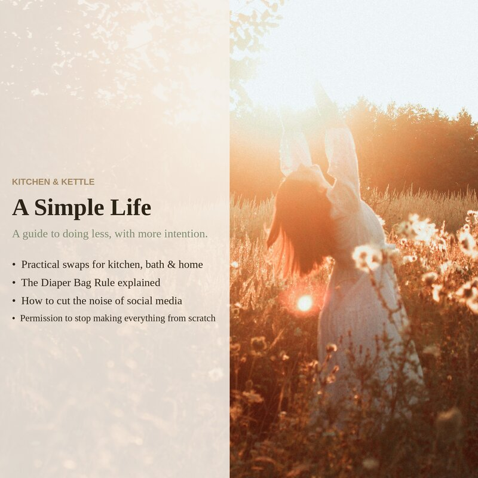

I own a diaper bag. I do not own a purse.
This started because I was tired of bags that only did one thing. I wanted something with compartments — pockets I could actually reach without emptying the whole thing. Something with a wipe-clean interior for when lunch leaks. Something with straps that attach to a shopping cart. After weeks of comparing totes, backpacks, and crossbody bags, I realized the thing I was describing already existed. It was a diaper bag.
So I bought one. No kids, no stroller — just a bag with more pockets than any purse on the market, a waterproof lining that survives a coffee spill, and straps that loop onto a grocery cart. Nobody checks your credentials at the door.
Here is what I discovered: a well-designed diaper bag also works as a purse. And a work bag. And a farmer's market tote. And a weekend bag. The insulated bottle pocket holds a water bottle or a thermos of coffee. The wipe-clean lining survives a leaking lunch container. The stroller straps loop onto a shopping cart. The compartments hold a notebook, a small first-aid kit, and the one lip balm I haven't lost yet.
One bag replaced five. I didn't buy a purse, a work tote, a weekend duffel, a lunch bag, or a market basket. I just used the thing that was already working.
This is the Diaper Bag Rule: one good thing that does many jobs beats five specialized ones. It sounds obvious, but the world we live in is built on the opposite assumption — that every need requires its own product. A separate cleaner for the shower, the glass, the floor, the counter. A separate appliance for coffee, tea, espresso, steamed milk. A separate container for leftovers, meal prep, pantry storage, lunch packing. The marketing works because it's flattering: you are a person with sophisticated needs, and sophisticated people own specialized tools. But specialized tools mostly gather dust while the one thing that works gets used every day.
Applying the rule in the kitchen
Mason jars. You can drink from them, store leftovers in them, shake salad dressing in them, ferment vegetables in them, freeze stock in them (leave headroom), pack lunches in them, measure ingredients in them, and use them as a rolling pin in a pinch. I have tried dozens of food storage solutions — plastic containers with snap lids, glass containers with snap lids, silicone bags, beeswax wraps, those collapsible silicone bowls that are always somehow still damp — and I keep coming back to mason jars. They're cheap. They're glass. The lids are standardized and replaceable. They stack. They don't stain or hold smells. One cabinet of jars does what three drawers of mismatched containers cannot.
Fewer cooking oils. You do not need avocado oil, grapeseed oil, walnut oil, sesame oil, chili oil, and truffle oil. You need olive oil for most things and butter for the rest. If you cook a lot of high-heat stir-fries, add one neutral oil with a high smoke point — avocado or peanut, not both. A bottle of toasted sesame oil is worth it if you cook east Asian food regularly. That's three oils, maximum. Anything beyond that is taking up cabinet space for a recipe you might make twice a year.
One brewer. Coffee maker, espresso machine, pour-over cone, French press, cold brew pitcher, electric kettle, stovetop kettle. If your counter has more than two of these, pick the one you use every day and put the rest in a cabinet. If they're still in the cabinet a year later, give them away. You are not a cafe. You are one person making one hot drink at a time.
In the bathroom
Bar soap over pump dispensers. A single bar of soap replaces body wash, hand soap, and face wash — three bottles become one bar. No plastic pump that stops working when there's still a quarter of the product left. No watered-down formula designed to make you use more. Castile soap is too harsh for some hands, but a gentle, fragrance-free bar soap works for nearly everyone. One bar. One spot on the counter. Done.
Free and clear. If you have sensitive skin — or live with someone who does — the "free and clear" rule eliminates entire aisles of products. No fragrances. No dyes. The shortest ingredient list you can find. This isn't minimalism as a philosophy; it's triage. When everything with a scent triggers a reaction, you stop shopping by brand and start reading labels. What you discover is that most of what's in the bottles is marketing. The fewer things in the product, the fewer things that can go wrong on your skin.
One moisturizer, maybe two. Face cream, eye cream, neck cream, day cream, night cream, hand cream, foot cream, body lotion, body butter — the skincare industry would like you to believe your face and your elbows are different species that require different products. They're skin. A good, simple moisturizer works everywhere. If you have a specific skin condition that requires a medicated cream, that's your second one. Everything else is the same product in different jars.
Around the house
Shop cloths instead of paper towels. A stack of white cotton shop cloths — the kind sold in bulk at hardware stores — replaces paper towels for everything except the genuinely disgusting jobs. They're more absorbent, they don't leave lint, and a stack of thirty costs what you'd spend on paper towels in two months. Keep a wet bag or a small bucket under the sink for used ones and wash them with the towels. You'll still want paper towels for cat vomit and bacon grease. For everything else — wiping counters, drying hands, cleaning spills — a cloth works better.
Fewer cleaners under the sink. Most households do not need glass cleaner, granite cleaner, stainless steel cleaner, tile cleaner, bathroom cleaner, kitchen cleaner, floor cleaner, and wood cleaner. You need a good all-purpose cleaner for most surfaces, a gentle abrasive for sinks and tubs, and something for floors if your all-purpose isn't rated for them. Three products where you probably have nine. The companies that sell cleaning products benefit from you believing every surface needs its own formula. Most surfaces just need to be clean.
What's in the full guide
The Diaper Bag Rule is one section of A Simple Life — a guide about subtraction, not addition. The full guide covers fewer inputs in the kitchen (mason jars, oils, one brewer, stainless and beeswax over disposables), simpler routines in the bathroom (bar soap, free and clear, one moisturizer), household swaps (cloth over paper, fewer cleaners), cutting the noise (journal your priorities, unfollow the voices that don't serve them), and the DIY trap — why you don't have to make everything yourself, and why supporting good brands isn't a failure of principles.
A Simple Life is nine pages of practical philosophy — no workbooks, no tracking pages, no fill-in-the-blanks. Just someone who did the experimenting so you don't have to.
A Simple Life Guide on Etsy →